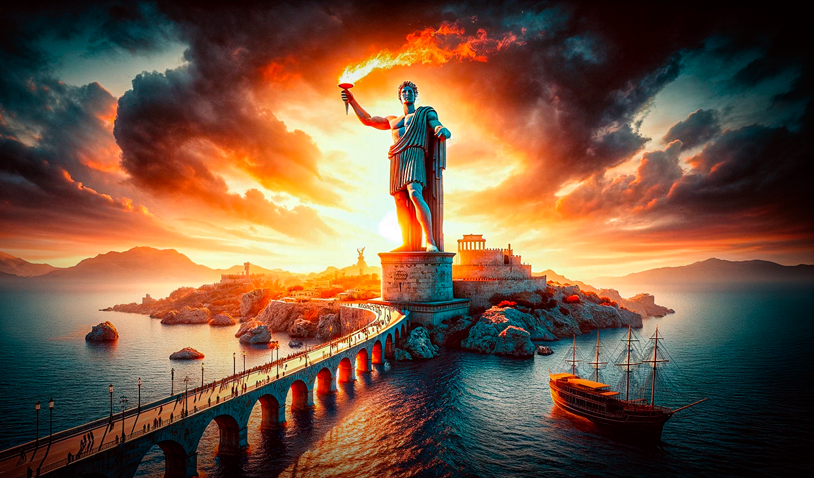

Ubicación: Isla de Rodas, Grecia. Autor: Cares de Lindos. Construcción: h. 280 a.C. Altura: 32 m aproximadamente. Estado: destruido en el terremoto de 226 a.C..
El Coloso de Rodas fue una enorme escultura realizada en honor al dios Helios (dios del Sol), en la isla de Rodas, Grecia. La escultura fue realizada por el artista Cares de Lindos hacia el año 280 a.C. Sin embargo, solo duró en pie 54 años, ya que un terremoto ocurrido en el año 226 a.C. la destruyó.
La estatua fue elaborada en bronce, sobre una estructura interna de hierro y piedras. Se erigía sobre una base de mármol. Según Plinio el Viejo, alcanzaba los 32,41 metros de altura, aunque otros autores la describen más alta. No se sabe la ubicación y postura exacta del Coloso. La tradición ha cultivado la idea de que apoyaba cada pie sobre dos columnas que daban entrada al muelle. Sin embargo, hoy se cree que la escultura se hubiera hundido con su propio peso. Una de las hipótesis actuales es que el Coloso se encontraba en el monte Smith de la Acrópolis de Rodas, desde donde habría vista al muelle.